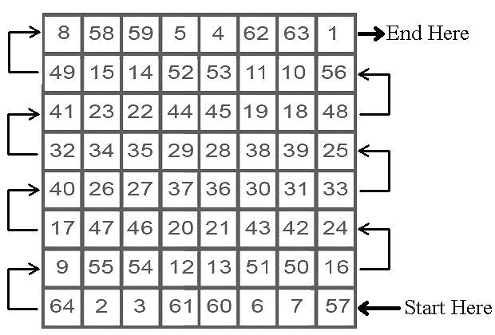
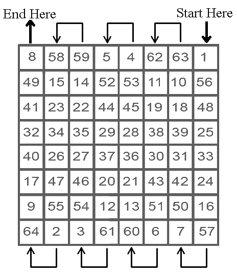

Kabalistic/Magickal Square of Mercury for empowering chakras, strengthening a debilitated Mercury, and for help in health and overall spiritual advancement related to Mercury


Kabalistic/Magickal Square of Mercury for material success, prosperity, and earthly [non-spiritual] affairs

The mantra for Mercury is for 64 days in a row. It is important never to skip any days, as this will cancel out the entire work.
Begin the mantra when Mercury is strong in its home signs of Gemini or Virgo, or when it is in its exalted sign of Aquarius.
DO NOT begin this mantra when Mercury is in the signs of Leo [its fall] or Sagittarius or Pisces [its detriment].
Begin the mantra on a Wednesday during the hours of Mercury.
Ideally, each day, the mantra chosen for Mercury should be recited during the hours of Mercury for that day. This is ideal, but regardless never skip any days, regardless of the hour.
Ritual/Magickal Rulerships for Mercury:
Communication, writing, speech, words, education, neighbors, messengers, the
mind, intellect and intelligence, mentality, books, newspapers, magazines,
computers and software, coordination and agility, manual dexterity, the media,
movement, short distance travel, youth, speed. The mental/mind aspect of the
soul.
Parts of the Body ruled by Mercury: All sensory organs, the lungs, arms, hands, reflexes, the brain, nerves, and nervous system.
Diseases: Nervous disorders, speech disorders, asthma [along with Mars], tremors, tuberculosis.
Professions: Journalism, writers, accountants, teachers, speakers, interpreters, secretaries, messengers, postal workers, printers, booksellers, librarians, clerks. Mercury is where your intellectual abilities and interests are. Mercury rules the young, the youth, books, pictures, writing materials, and anything connected with education and communication.
In your astrology chart: The house Mercury is posited in, along with the houses that have the signs of Gemini and Virgo on the cusps.
The Kabalistic/Magickal planetary square working empowers the throat chakra and strengthens a weakened/debilitated Mercury in one's astrology chart and helps in the affairs ruled by the house/s with the signs of Gemini and Virgo on the cusp/s and the house containing Mercury.
MANTRA FOR MERCURY:
AUM BRAAM BRIM BRAUM SAU BUDHAAYA NAMA
One can replace with NAMA with SVAHA ٠ [S-V-AH-HAH]٠ when working for
spiritual goals
Pronunciation: AHH-UUU-MMM ٠ BB-RR-AH – AH-MM ٠ BB-RR-EE-MM ٠ BB-RR-AH-UU-MM ٠ SAH-UUU ٠ BUU-DD-HAH-AH-YAH ٠ NAH-MAH
AH rhymes with Saw ٠ UUU rhymes with Too ٠ All R's need to be rolled ٠
© Copyright 2011, Joy of Satan Ministries;
Library of Congress Number: 12-16457
Back to Kabalistic/Magickal Squares Main Page
BACK TO SATANIC POWER MEDITATION MAIN PAGE